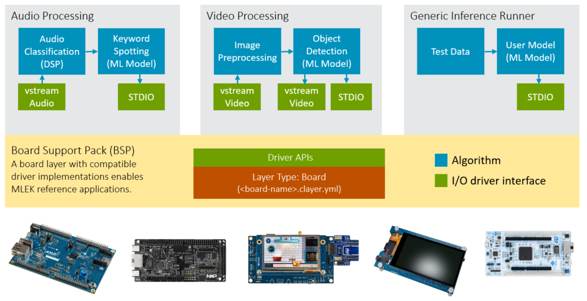

Overview
The Machine Learning Evaluation Kit (MLEK) pack contains CMSIS Reference Applications and templates for Edge AI development with embedded systems. These applications implement data preprocessing, memory management, and neural network inference pipelines that are optimized for Cortex-M and Ethos-U platforms.
Key Features:
- Rapid Prototyping: Get working ML applications running quickly with minimal setup.
- Algorithm Development: Use example code as design patterns for custom ML algorithm implementation.
- Model Integration: Easily swap in custom TensorFlow Lite models with minimal code changes.
- Performance Validation: Test and optimize ML performance on target hardware or simulation.
- Hardware Evaluation: Compare performance across different Corstone platforms and configurations.
The CMSIS-MLEK software pack is derived from the Arm® ML embedded evaluation kit and makes the examples easier to access. It also contains interfaces to physical hardware and simplifies porting to target hardware. It contains the following ML applications and uses currently Neural Network Models currently in TensorFlow Lite format.
| ML application | Description | Neural Network Model |
|---|---|---|
| Keyword spotting (KWS) | Recognize the presence of a key word in verbal speech | MicroNet |
| Object detection | Detects and draws face bounding box in a given image | Yolo Fastest |
| Generic inference runner | Code block allowing you to develop your own use case | Your custom model |
Each ML reference application is a csolution project which supports deployment to physical hardware or Arm Virtual Hardware (AVH-FVP) for simulation.

A board layer (*.clayer.yml) implements the drivers for the physical interfaces. The API interfaces required by the different applications is shown in the table below.
| Required API Interfaces | Description |
|---|---|
| Audio Processing | |
| CMSIS_VSTREAM_AUDIO_IN | CMSIS-Driver vStream configured for Audio input. |
| STDOUT | Standard I/O for printf output. |
| Video Processing | |
| CMSIS_VSTREAM_VIDEO_IN | CMSIS-Driver vStream configured for Video input. |
| CMSIS_VSTREAM_VIDEO_OUT | CMSIS-Driver vStream configured for Video output. |
| STDOUT | Standard I/O for printf output. |
| Generic Inference Runner | |
| STDOUT | Standard I/O for printf output. |
Platform Support
The templates support via target names multiple Arm Cortex-M IP Subsystems. These target names support execution on AVH FVP simulation models which is useful during software development or with Contiguous Integration (CI) testing using GitHub actions.
| Target Name | IP Subsystem | Description |
|---|---|---|
| AVH-SSE-300 | Corstone-300 | Cortex-M55 optional with Ethos-U55 or Ethos-U65 |
| AVH-SSE-310 | Corstone-310 | Cortex-M85 optional with Ethos-U55 |
| AVH-SSE-315 | Corstone-315 | Cortex-M85 optional with Ethos-U65 |
| AVH-SSE-320 | Corstone-320 | Cortex-M85 optional with Ethos-U85 |
Adding a postfix to the target name in the *.csolution.yml project file configures the neural network inference pipeline for Ethos-U. Without this prefix only the Cortex-M system is used as shown in the diagram below. Such a postfix can also be used for target names that deploy to physical hardware.
| Postfix | Description |
|---|---|
| none | Cortex-M system only, no Ethos-U NPU |
-U55-128 |
Cortex-M system + Ethos-U55 NPU (128 MACs) |
-U55 |
Cortex-M system + Ethos-U55 NPU (256 MACs) |
-U65 |
Cortex-M system + Ethos-U65 NPU |
-U85 |
Cortex-M system + Ethos-U85 NPU |